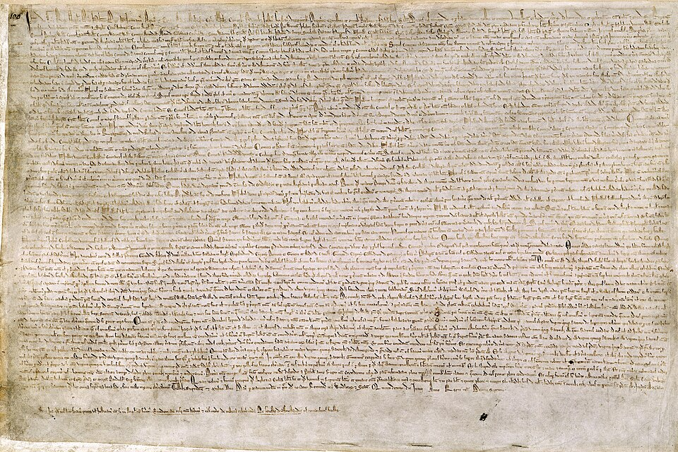

El rey Juan sella a disgusto la carta de libertades que le arrancaron sus barones
En el prado de Runnymede, junto al Támesis, el monarca estampó su sello en un pergamino de sesenta y tres cláusulas que somete su poder a la ley de la tierra. Ningún hombre libre será apresado sin juicio de sus pares y no habrá tributos sin consejo del reino. Un consejo de veinticinco barones vigilará que el rey cumpla.

En el prado de Runnymede, junto al Támesis, a mitad de camino entre el castillo de Windsor y la villa de Staines, el rey Juan de Inglaterra ha estampado hoy su sello en una gran carta de libertades que sus barones, alzados en armas desde la primavera, le pusieron delante con las espadas todavía ceñidas. El rey no firmó: selló, según es uso, y la cera real quedó pendiendo del pergamino ante los ojos de obispos, condes y caballeros que colmaban la pradera. Cuentan los presentes que el monarca guardó las formas, pero que su semblante no era el de quien otorga, sino el de quien entrega.
La carta cuenta unas sesenta y tres cláusulas, y algunas suenan a cosa nunca escrita. Ningún hombre libre será apresado, ni encarcelado, ni desposeído de lo suyo, sino por juicio legal de sus pares o por la ley de la tierra. No se impondrán escudajes ni ayudas sin consejo común del reino. La Iglesia de Inglaterra será libre en sus derechos y elecciones. Londres y las demás villas conservan sus libertades y antiguas costumbres. Y para que nada quede en promesa, veinticinco barones elegidos vigilarán el cumplimiento, con potestad de apremiar al propio rey, tomándole castillos y tierras, si el monarca faltase a lo sellado.
Nadie llega a un prado así por buen camino. Las guerras del rey en Francia acabaron el verano pasado en el desastre de Bouvines, donde sus aliados fueron deshechos y con ellos la esperanza de recobrar Normandía. Para pagar esas campañas perdidas, Juan exprimió al reino con escudajes y tributos como no se recordaban, y a los barones que protestaban los trató con prisiones y rehenes. En la primavera, los señores del norte le retiraron su homenaje y tomaron Londres sin apenas resistencia. Entre ambos bandos ha mediado sin descanso el arzobispo de Canterbury, Stephen Langton, a quien muchos atribuyen el espíritu y aun la letra de la carta.
La paz sellada no engaña a nadie en la pradera. Los barones acamparon con sus mesnadas a la vista del pabellón real, y ni uno solo desciñó la espada durante la ceremonia. En las tiendas se murmura que el rey selló por necesidad lo que jamás concederá de grado, pues nunca perdonó agravio ni cumplió promesa que le costara cara. Se dice que apenas vuelto a Windsor despachó correos, y cada cual les imagina destino: unos hablan de Roma, otros de lanzas mercenarias del otro lado del mar. La carta manda entregar rehenes y castillos; nadie ha visto todavía entregar ninguno.
Quede consignado lo que este día tiene de inaudito. No es la primera vez que un rey concede fueros; es la primera, que se recuerde en Inglaterra, en que se pone por escrito que el propio rey está debajo de la ley, y que sus vasallos pueden obligarlo por derecho y no solo por la fuerza. Puede que la cera salte y el pergamino acabe en el fuego; los reyes tienen larga memoria y corta paciencia. Pero lo escrito ya fue leído en voz alta ante mil testigos, y este diario sospecha que un pergamino sellado a disgusto puede pesar, con los años, más que un ejército.